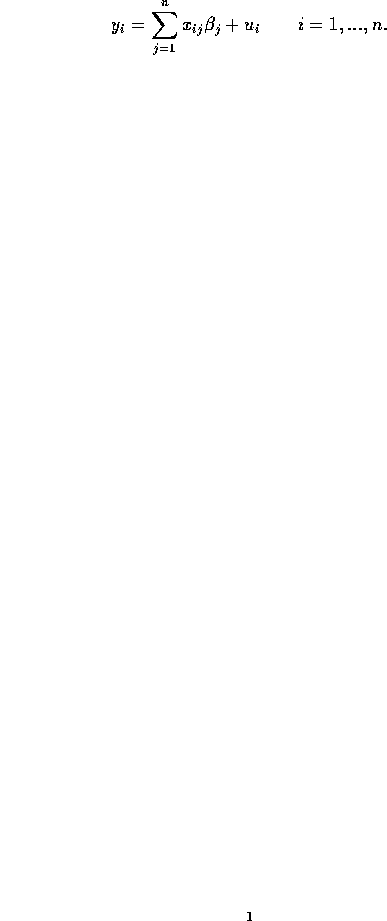
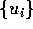
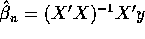

We will show that a heteroscedasticity corrected GMM estimator can improve upon the performance of the least squares estimator in certain, iid error, classical linear regression models, even though there is no heteroscedasticity to correct. Consider the classical linear regression model

Throughout, we will assume that the error sequence

is independent and identically distributed with common distribution function F. Under plausible conditions on F we find an unbiased estimator,
. Our estimator, which we call the Falstaff estimator for reasons which will become gradually apparent, is a variant on generalized method of moments estimators which have attracted considerable recent interest in the literature.